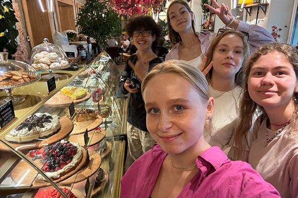

Школа китайского языка ChaPanda была основана в 2023 году и с тех пор зарекомендовала себя как надежный партнер в обучении языку. Наши преподаватели — это опытные кандидаты наук, старшие преподаватели московских вузов, а также молодые и талантливые специалисты, которые привносят свежие идеи и методы в процесс обучения. ChaPanda предлагает уникальную систему обучения, которая адаптирована как для учеников, так и для их родителей. Мы акцентируем внимание на эффективном усвоении знаний, что позволяет достигать стабильных и положительных результатов. Наша школа работает в дистанционном формате, что обеспечивает гибкость и доступность обучения для всех желающих. Мы уверены, что совместными усилиями мы сможем легко и быстро достичь успеха в изучении китайского языка!
Должность: Директор Описание: Екатерина Дмитриевна — опытный руководитель с более чем 10-летним стажем работы в сфере образования и языкового обучения. Она получила степень магистра в области международных отношений с акцентом на восточные языки и культуры, что позволило ей глубже понять специфику китайского языка и его значение в современном мире. Екатерина активно развивает школу ChaPanda, внедряя инновационные методы обучения и современные технологии. Она стремится создать дружелюбную и поддерживающую атмосферу как для студентов, так и для преподавателей. Екатерина также организует культурные мероприятия и вебинары, которые помогают студентам лучше понять китайскую культуру и традиции. Так же она организует поездки в Китай для выпускников.
Должность: Преподаватель китайского языка Уровень владения: Носитель языка Описание: Иван родился и вырос в Пекине, имеет степень магистра в области китайской филологии. Он преподавал китайский язык в различных учебных заведениях и сейчас делится своим опытом с учениками ChaPanda. Иван активно использует современные технологии в обучении и любит внедрять элементы китайской культуры в свои занятия.
Должность: Преподаватель китайского языка Уровень владения: C1 (профессиональный уровень) Описание: Анна изучала китайский язык в университете и провела несколько лет в Китае, где работала в международной компании. Она специализируется на деловом китайском и помогает студентам подготовиться к общению в профессиональной среде. Анна активно участвует в культурных обменах и организует вебинары по китайской культуре.
Должность: Преподаватель китайского языка Уровень владения: C2 (владение на уровне носителя) Описание: Дмитрий изучал китайский язык в университете и провел несколько лет в Китае, где работал переводчиком. Он специализируется на разговорном китайском и помогает студентам преодолевать языковой барьер. Его занятия наполнены живыми примерами из жизни и культурными аспектами.
Должность: Методист Уровень владения: B2 (выше среднего) Описание: Анна имеет опыт работы в образовательной сфере более 7 лет. Она разрабатывает учебные программы и материалы для курсов, а также проводит тренинги для преподавателей. Анна увлечена новыми методами обучения и всегда ищет способы улучшить качество преподавания.

Больше фото нашей команды можно увидеть, щёлкнув по графической ссылке выше